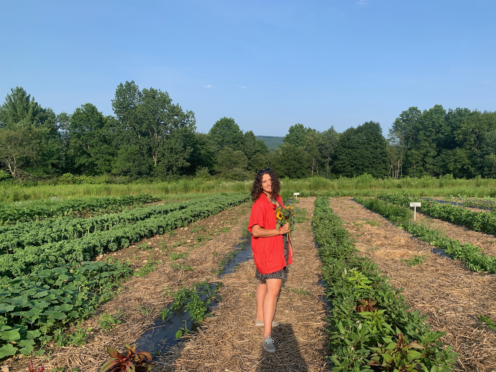

STUDENT FARMER BOOK&PLOW FARM / AMHERST COLLEGE
 In the spring of 2022, I worked as a student farmer at Book & Plow Farm, focusing on preparing and planting fall crops. My tasks included seeding, potting, and planting a variety of vegetables like peppers, Brussels sprouts, kale, potatoes, and onions, as well as preparing fields for cover crops such as mustard. Late in the season, I assisted in harvesting kale and cilantro. I also collected soil samples for laboratory analysis and was responsible for greenhouse maintenance, which involved watering, monitoring plant health, and maintaining environmental controls to ensure optimal growing conditions. Beyond crop management, I contributed to several farm development projects. These included preparing a raised bed for herbs and medicinal plants, helping devise a design that would prevent poison ivy encroachment. I also helped dismantle an old greenhouse and prepare the land for a new structure. One of my major contributions was clearing a large area overrun with invasive species like buckthorn and multiflora rose, making way for a new field plot. A key aspect of Book&Plow’s mission is educational outreach, and I assisted in leading classes that introduced sustainable farming practices to students. I guided class activities and supported the integration of farm-based learning into academic coursework.
TAKEAWAYS
I regret not discovering the opportunity to work at the farm earlier in my undergraduate career. The hands-on work in farm management and sustainable agriculture felt deeply practical and engaging, allowing me to directly apply what I was learning instead of viewing it as abstract or conceptual. It was eye-opening to see the barriers farmers face when trying to implement organic or regenerative practices and obtain certification. This experience also reshaped my understanding of how farms interact with and contribute to their communities—both ecologically and socially—emphasizing the importance of mutual support between a farm and its surrounding environment.